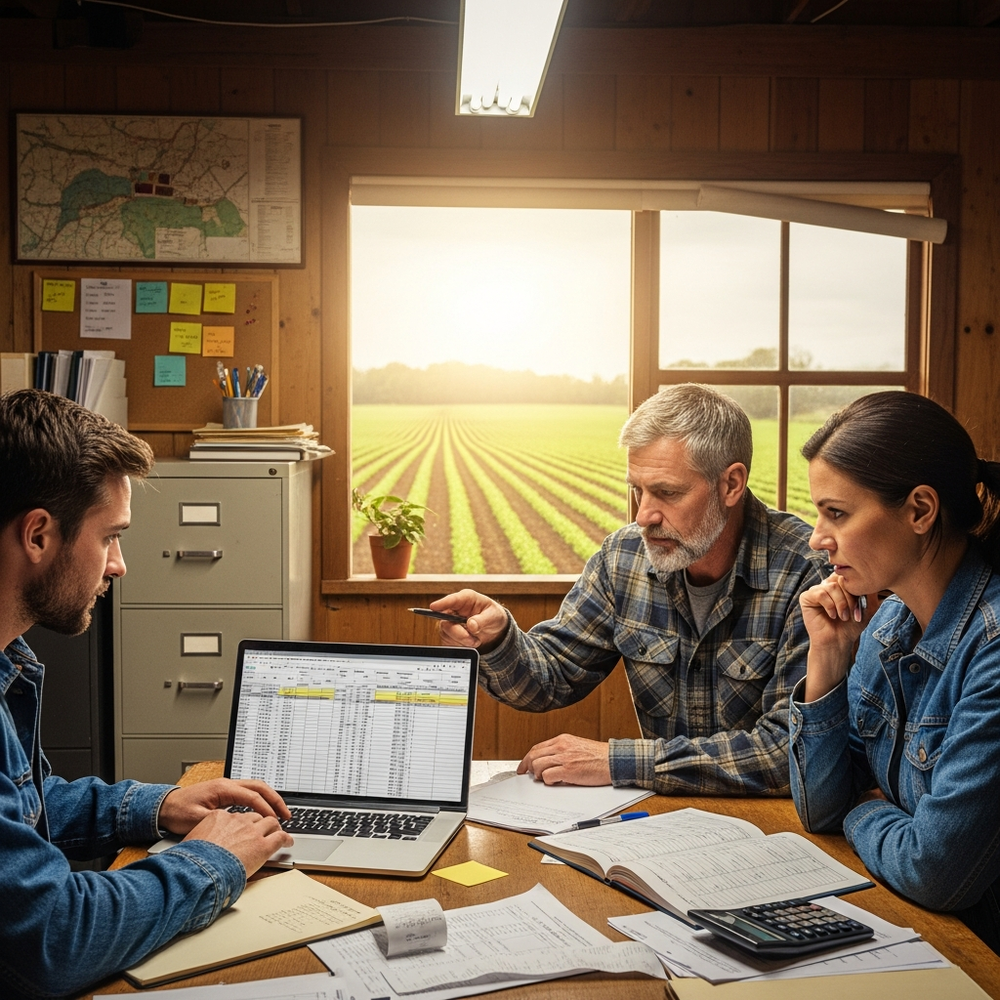

Gestão Financeira para Agricultores
Aprenda a controlar seu fluxo de caixa, custos de produção e a planejar investimentos para o crescimento sustentável do seu negócio.
- Fluxo de Caixa Rural
- Precificação de Produtos
- Planejamento Financeiro